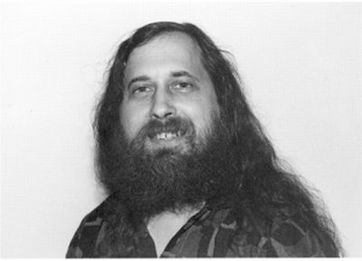

Il dipartimento d’informatica della New York University si trova all’interno della Warren Weaver Hall, edificio simile a una fortezza situato due isolati a destra dopo Washington Square Park. Una serie di condotte di dimensioni industriali per l’aria condizionata creano tutt’intorno una cortina di aria calda, scoraggiando la presenza di fannulloni e questuanti. I visitatori che riescono a superare quella cortina si trovano davanti a un’altra formidabile barriera, il bancone con gli addetti alla sicurezza, posto immediatamente nell’atrio dell’unico ingresso all’edificio.
Superati i controlli, l’atmosfera si fa un po’ più rilassata. Eppure colpiscono i numerosi cartelli sparsi lungo tutto il primo piano che informano sui pericoli di porte poco sicure e sulle uscite d’emergenza in caso d’incendio. Considerati nel loro insieme, quegli avvisi implicano un ammonimento preciso: perfino nel contesto relativamente tranquillo della New York precedente l’11 settembre 2001, nessuno può dirsi troppo prudente o sospettoso.
Uno scenario che si pone come stimolante contraltare al crescente numero di visitatori che va raccogliendosi nell’atrio interno. Alcuni paiono studenti della stessa università. La maggior parte sembra come raccolta davanti all’ingresso di un locale notturno nell’attesa di un eccitante concerto. Per una breve mattinata, le masse hanno conquistato la Warren Weaver Hall, lasciando gli addetti alla sicurezza con null’altro da fare se non seguire la TV e indicare con una scrollata di spalle l’adiacente auditorium ogni volta che qualcuno chiede qualcosa sul “discorso”.
Una volta all’interno dell’auditorium, ci si trova davanti a colui che ha imposto questa temporanea chiusura delle procedure di sicurezza nell’edificio. Si tratta di Richard M. Stallman, fondatore del progetto GNU, presidente fondatore della Free Software Foundation, vincitore nel 1990 della MacArthur Fellowship, del premio Grace Murray Hopper assegnato (nello stesso anno) dalla Association of Computing Machinery, nonché nel 2001 co-vincitore del premio Takeda della Takeda Foundation, e già hacker presso il laboratorio di intelligenza artificiale. Come annunciato su una schiera di siti web del mondo hacker, incluso quello dello stesso progetto GNU (http://www.gnu.org), Stallman si trova a Manhattan, suo luogo di nascita, per tenere un atteso intervento in replica alla recente campagna lanciata dalla Microsoft Corporation contro la GNU General Public License.
Tema del discorso di Stallman è la storia e il futuro del movimento del software libero. Significativo il luogo prescelto: meno di un mese addietro, il senior vice president di Microsoft, Craig Mundie, era intervenuto alla vicina Stern School of Business della New York University mirando a distruggere la General Public License, anche nota come GPL, documento legale elaborato da Stallman 16 anni prima. Messa a punto per ribattere alla crescente ondata di segretezza sul software che stava conquistando l’industria informatica – ondata di cui Stallman si rese conto per la prima volta nel corso degli anni ’80 con i problemi relativi alla stampante laser della Xerox – la GPL si era evoluta in uno strumento essenziale per la comunità del software libero. In sintesi, la GPL vincola i programmi software a una sorta di proprietà collettiva – quello che oggi gli studiosi di diritto vanno definendo come “bene comune digitale” – facendo leva sul peso legale del copyright. Una volta vincolati, i programmi divengono inamovibili. Ogni loro versione successiva deve contenere la medesima protezione sul copyright – perfino quei programmi derivati che includono soltanto una porzione minima del codice originario. Questo il motivo per cui qualcuno nell’industria del software ha definito la GPL una licenza “virale”, nel senso che si autoriproduce all’interno di ogni software con cui viene a contatto1.
In un’economia dell’informazione sempre più dipendente dal software e sempre più legata ai relativi standard, la GPL è divenuta un punto di riferimento. Perfino quelle aziende che una volta la schernivano definendola il socialismo del software, sono state costrette a riconoscerne i benefici.
Linux, il kernel in stile Unix sviluppato dallo studente finlandese Linus Torvalds nel 1991, viene rilasciato sotto la licenza GPL, al pari di gran parte degli strumenti di programmazione più diffusi al mondo: GNU Emacs, GNU Debugger, GNU C Compiler, ecc. Nel loro insieme, tali strumenti rappresentano i componenti di un sistema operativo libero sviluppato, mantenuto e posseduto dalla comunità hacker mondiale. Anziché considerare quest’ultima come una minaccia, grandi società informatiche quali IBM, Hewlett-Packard e Sun Microsystems hanno deciso di appoggiarla, commercializzando applicazioni e servizi realizzati per operare appositamente all’interno dell’infrastruttura in continua crescita del software libero.
Queste aziende vi fanno affidamento anche come arma strategica nella guerra infinita intrapresa dalla comunità hacker contro la Microsoft , che nel bene o nel male ha dominato il mercato del software per PC fin dagli ultimi anni ’80. In quanto proprietaria del popolare sistema operativo Windows, la Microsoft è quella che rischia di più nel caso di un passaggio alla licenza GPL in grande scala. Quasi ogni riga di codice presente nel colosso Windows è protetta da copyright, ad ulteriore conferma della natura privata dei sorgenti sottostanti oppure, in ultima analisi, per riaffermare la possibilità legale di trattarli in quanto tali. Dal punto di vista di Microsoft, l’eventualità di incorporare all’interno di tale colosso un qualche programma protetto dalla “virale” GPL potrebbe essere paragonato a Superman che inghiotte un intero flacone di pillole alla Kryptonite. Le aziende rivali potrebbero immediatamente copiare, modificare e vendere versioni migliorate di Windows, rendendo vulnerabile all’istante la propria posizione di numero uno tra i produttori di software nell’area consumer. Questo spiega le crescenti preoccupazioni della società rispetto al ritmo di adozione della GPL. Da qui il recente intervento di Mundie contro la GPL e l’approccio “open source” allo sviluppo e alla vendita di software e, di conseguenza, la decisione odierna di Stallman di replicare pubblicamente a quel discorso all’interno del medesimo campus universitario.
Per l’industria del software, vent’anni non sono poca cosa. Consideriamo questo: nel 1980, quando Richard Stallman imprecava contro la stampante laser Xerox nel laboratorio di intelligenza artificiale, la Microsoft, azienda considerata dagli odierni hacker al primo posto nell’industria del software mondiale, non era altro che una start-up privata. La IBM, azienda fino ad allora considerata dagli hacker come la maggior potenza della stessa industria, doveva ancora commercializzare il suo primo personal computer, sulla cui scia sarebbe poi esploso un mercato dai prezzi in costante ribasso. Gran parte delle tecnologie oggi date per scontate – il World Wide Web, la televisione via satellite, le console video a 32 bit – non esistevano neppure. Lo stesso vale per molte di quelle entità oggi ai primi posti nel firmamento della grande imprenditoria statunitense, aziende quali AOL, Sun Microsystems, Amazon.com, Compaq, Dell. E l’elenco potrebbe continuare.
Il fatto che il mercato della tecnologia sia cresciuto in maniera esponenziale in così poco tempo fornisce motivazioni valide per entrambe le parti coinvolte nel dibattito sulla GPL.
I sostenitori di quest’ultima sottolineano la vita relativamente breve della maggior parte delle piattaforme hardware. Davanti al rischio di acquistare un prodotto obsoleto, i consumatori tendono a optare per quelle aziende che sembrano vivere più a lungo. Di conseguenza il mercato è divenuto una sorta di arena in cui chi vince piglia tutto2. L’odierno settore del software sotto proprietà privata, affermano i sostenitori della GPL, conduce all’abuso e alla stagnazione tipiche dei monopoli. Le aziende più forti succhiano tutto l’ossigeno dal mercato a danno dei diretti concorrenti e delle start-up innovative.
Chi è contro la GPL sostiene esattamente l’opposto. Vendere software è rischioso tanto quanto acquistarlo, se non di più, ribadiscono costoro. In assenza delle garanzie legali previste nelle licenze private, per non parlare delle prospettive economiche susseguenti a una “killer application” proprietaria (ovvero, una tecnologia dirompente che apre un mercato del tutto nuovo)3, le aziende perdono incentivo a partecipare. Di nuovo, il mercato andrebbe verso la stagnazione, e l’innovazione verso il declino. Come ha fatto notare lo stesso Mundie nel suo intervento del 3 maggio 2001 nel medesimo campus, la natura “virale” della GPL “pone una minaccia” a qualsiasi azienda che basa sull’unicità del software il proprio vantaggio competitivo. Così Mundie:
Fondamentalmente la GPL mette in pericolo anche il settore indipendente del software commerciale poiché rende effettivamente impossibile una distribuzione in cui l’acquirente sia chiamato a pagare per il prodotto anziché soltanto per i costi di distribuzione4.
Il reciproco successo sia di GNU/Linux, il sistema operativo costruito intorno al kernel Linux e coperto da licenza GPL, sia di Windows nel corso degli ultimi dieci anni rivela la validità di entrambi i punti di vista. Tuttavia, la battaglia appare di estrema importanza per l’intera industria del software. Perfino potenti produttori come Microsoft fanno affidamento sul sostegno di sviluppatori esterni i cui strumenti, programmi e giochi rendono più attraente per il consumatore medio la piattaforma sottostante, in questo caso Windows. Citando la rapida evoluzione del mercato tecnologico nel corso degli ultimi vent’anni, nonché l’ammirevole record di crescita della propria azienda nello stesso periodo, Mundie ha messo in guardia i presenti contro i facili entusiasmi per i recenti successi del movimento del software libero:
Due decenni di esperienza hanno dimostrato come un modello economico capace di tutelare la proprietà intellettuale e un modello commerciale in grado di recuperare gli stanziamenti per la ricerca e lo sviluppo, siano in grado di creare notevoli benefici economici e di distribuirli in maniera assai ampia5.
Questi gli ammonimenti che fanno da contraltare all’odierno intervento di Stallman. A meno di un mese di distanza da quel discorso, eccolo pronto a iniziare, in piedi, le spalle a una lavagna, in un aula della New York University.
Se gli ultimi due decenni hanno portato enormi cambiamenti nel mercato del software, quelli subìti dallo stesso Stallman sono ancora più evidenti. È ormai scomparso l’hacker smilzo e senza barba che una volta trascorreva intere giornate a stretto contatto di gomito con l’amato PDP-10. Al suo posto troviamo un uomo di mezza età, ben piazzato, capelli lunghi e barba rabbinica, un uomo che oggi trascorre gran parte del tempo a scrivere e rispondere a messaggi e-mail, ad arringare i colleghi programmatori, a tenere interventi pubblici come quello odierno. Con indosso una maglietta color carta da zucchero e un paio di pantaloni marroni di poliestere, Stallman sembra un eremita del deserto che ha appena arraffato qualche vestito in un guardaroba dell’Esercito della Salvezza.
La platea è piena di visitatori che ne condividono abbigliamento e aspetto. Molti girano con computer portatili e modem cellulari, onde poter registrare e trasmettere le parole di Stallman al trepidante pubblico di Internet. Il rapporto tra i presenti è all’incirca di 15 uomini per ogni donna, e una delle 7-8 donne porta un pinguino di pezza, mascotte ufficiale di Linux, mentre un’altra ha con sé un orsacchiotto.

Figura 2.1 Richard Stallman, circa 2000. “Decisi che avrei sviluppato un sistema operativo di software libero oppure sarei morto provandoci… di vecchiaia, naturalmente.” Foto ripresa da http://www.stallman.org
Nervoso, Stallman si sposta dal centro della sala e va a sedersi su una sedia in prima fila, a digitare alcuni comandi su un portatile già aperto. Per i dieci minuti successivi egli è del tutto indifferente al crescente numero di studenti, professori e appassionati che gli girano davanti ai piedi del palco dell’auditorium.
Prima che il discorso possa avere inizio, occorre comunque osservare il rituale barocco delle formalità accademiche. La presenza di Stallman merita non una, bensì due introduzioni. A Mike Uretsky, condirettore del Center for Advanced Technology presso la Stern School, spetta la prima.
“Il ruolo di ogni università è quello di stimolare il dibattito e produrre discussioni interessanti”, inizia Uretsky. “Questa presentazione in particolare, questo seminario rientra perfettamente in tale contesto. Trovo di particolare interesse ogni contributo sul tema dell’open source”.
Prima che possa aggiungere un’altra parola, Stallman è in piedi che gesticola vivacemente come qualcuno rimasto in panne sull’autostrada.
“Io mi occupo di software libero”, urla tra un crescendo di risa. “L’open source è un movimento diverso”.
Le risate si trasformano in applausi. La stanza è zeppa di sostenitori di Stallman, gente che conosce bene la sua reputazione di pignoleria verbale, per non parlare del suo distacco, ampiamente pubblicizzato nel 1998, dai sostenitori del software open source. Molti sono soliti attendere con fervore simili uscite di Stallman, divenute una sorta di marchio di fabbrica inconfondibile.
Uretsky chiude rapidamente l’introduzione per passare la parola a Edmond Schonberg, docente del dipartimento d’informatica della New York University. Programmatore e collaboratore del progetto GNU, Schonberg conosce le trappole linguistiche da evitare. Egli riassume per sommi capi la carriera di Stallman secondo il punto di vista di un programmatore dei nostri giorni.
“Richard incarna il perfetto esempio di qualcuno che, operando a livello locale, ha iniziato a pensare globalmente [ai] problemi relativi alla mancata disponibilità del codice sorgente”, dice Schonberg. “Ha così sviluppato una filosofia coerente che ha costretto tutti noi a riesaminare le nostre concezioni sulla produzione del software, sul significato della proprietà intellettuale e sul valore concreto della comunità dei programmatori.”
Schonberg dà poi il benvenuto a Stallman in un crescendo di applausi. In pochi istanti quest’ultimo spegne il portatile, si alza dalla sedia e sale sul palco.
Inizialmente il discorso di Stallman richiama più un repertorio teatrale che un intervento politico. “Vorrei ringraziare la Microsoft per avermi offerto l’opportunità di trovarmi in questa sede”, così rompe il ghiaccio. “Nelle ultime settimane mi sono sentito come uno scrittore i cui libri siano stati accidentalmente vietati in qualche paese.”
Per i non iniziati, Stallman passa poi ad illustrare rapidamente un’analogia per il software libero. Egli è solito paragonare un programma a una ricetta di cucina. Entrambi forniscono istruzioni dettagliate su come portare a compimento un certo compito e possono essere facilmente modificati a seconda di esigenze o circostanze individuali. “Non occorre seguire alla lettera una ricetta”, fa notare Stallman. “Si può omettere qualche ingrediente. Aggiungere un po’ di funghi perché ci piacciono. Mettere meno sale perché così ci ha consigliato il medico – e via di seguito.”
Elemento ancor più rilevante, prosegue Stallman, è la semplicità nel condividere sia ricette che programmi. Nel passare la ricetta a un ospite, il cuoco non ci rimette altro che il tempo e il costo della carta necessari per scrivere la ricetta. Per il software occorre ancora meno, in genere basta qualche clic del mouse e un minimo di elettricità. In entrambi i casi, tuttavia, la persona che trasmette quelle informazioni guadagna due cose: una maggiore amicizia e la possibilità di ottenere in cambio altre ricette interessanti.
“Immaginiamo cosa accadrebbe se le ricette fossero rinchiuse all’interno di scatole nere”, prosegue Stallman, cambiando registro. “Sarebbe impossibile vedere gli ingredienti usati, per non parlare della possibilità di modificarli; e chissà quali conseguenze nel farne una copia per un amico. Saremmo bollati come pirati, processati e sbattuti in galera per anni. Uno scenario che susciterebbe accese proteste da parte di quanti amano scambiarsi ricette. Ma questo è esattamente lo scenario dell’odierno software proprietario. Un mondo in cui si proibiscono o impediscono azioni di comune buon senso verso gli altri.”
Dopo quest’analogia introduttiva, Stallman si lancia nel racconto dell’episodio della stampante laser Xerox. Come nel caso delle ricette, anche questa vicenda è un utile espediente retorico. Il racconto in forma di parabola evidenzia la rapidità con cui le cose possono cambiare nel mondo del software. Riportando i presenti al periodo precedente all’acquisto con un solo clic del mouse ideato da Amazon.com, all’esistenza di Windows o dei database di Oracle, invita chi ascolta a esaminare la nozione di proprietà del software, indipendentemente dall’esistenza degli attuali marchi delle grandi corporation.
Stallman presenta il racconto con tutta l’arguzia e la pratica di un pubblico ministero alle prese con l’arringa finale. Quando arriva alla scena del professore alla Carnegie Mellon che rifiuta di cedergli una copia dei sorgenti della stampante, Stallman fa una pausa.
“Ci ha traditi”, prosegue. “Non soltanto ha tradito tutti noi, ma anche te.”
Pronunciando quel “te” punta l’indice accusatorio contro un insospettabile membro del pubblico. Costui aggrotta le sopracciglia, ma lo sguardo di Stallman è andato già oltre. In maniera lenta e deliberata, sceglie qualcun altro in platea che sta per accennare una risatina nervosa. “E molto probabilmente ha fatto lo stesso con te”, insiste indicando stavolta una persona seduta tre file dietro la prima.
Quando Stallman ripete la scena per la terza volta, le risatine si sono trasformate in una risata generale. Il tutto appare un tantino teatrale, così è infatti. E al momento di concludere la storia della stampante, Stallman si esibisce come un attore consumato. “Probabilmente ha tradito la maggior parte delle persone riunite in questa sala – eccetto forse alcuni che nel 1980 non erano ancora nati”, conclude Stallman, suscitando risate ulteriori. “[Questo] perché aveva promesso di rifiutare ogni collaborazione praticamente con l’intera popolazione del pianeta Terra.”
E dopo una pausa a effetto per lasciar sedimentare i commenti, aggiunge: “Aveva firmato un contratto di non divulgazione.”
Il passaggio di Richard Matthew Stallman da accademico frustrato a leader politico nel corso degli ultimi vent’anni è testimonianza di diversi elementi importanti: la sua natura testarda e la volontà prodigiosa, una visione ben articolata dei valori di quel movimento per il software libero che ha aiutato a costruire. Testimonia inoltre dell’alta qualità dei programmi da lui realizzati, programmi che ne hanno consolidato la reputazione come una leggenda nell’ambito della programmazione. E rivela altresì il crescente successo della GPL, un’innovazione legale che molti osservatori considerano il suo contributo più valido.
Fatto sicuramente più importante, tale passaggio mette in luce il mutamento del potere politico in un mondo sempre più dipendente dalla tecnologia informatica e dal software su cui questa poggia.
Forse è questo il motivo per cui, anche di fronte al declino di buona parte delle stelle high-tech, la fama di Stallman sia andata invece crescendo. Fin dal lancio del progetto GNU nel 19846, egli è stato di volta in volta ignorato, ridicolizzato, denigrato e attaccato – sia all’interno sia all’esterno del movimento del software libero. In tutto ciò, quel progetto è riuscito a raggiungere successi importanti, pur se con i notori ritardi, acquistando un ruolo rilevante in un mercato infinitamente più complesso di quello in cui egli era entrato 18 anni fa. Analoga l’evoluzione seguita dall’ideologia del software libero, un’ideologia meticolosamente coltivata dallo stesso Stallman.
Per comprendere le motivazioni che sottendono all’attuale scenario, potrà giovare un’analisi del personaggio sia tramite le sue parole sia tramite quelle di chi ha collaborato e combattuto al suo fianco fino a oggi. Non sembra certo complicato tracciarne un ritratto. Se c’è una persona che può incarnare il vecchio adagio, “quel che vedi è quello che ottieni7”, questi è Stallman.
“Credo che per comprendere Richard Stallman in quanto essere umano, bisogna considerarne le varie componenti come un insieme coerente”, mette sull’avviso Eben Moglen, consigliere legale per la Free Software Foundation e professore di legge presso la Columbia University Law School. “Tutte quelle espressioni di eccentricità personale che molta gente percepisce come ostacoli alla conoscenza di Stallman, in realtà ne costituiscono l’essenza: il suo forte senso di frustrazione, l’enorme attaccamento ai principi etici, l’incapacità di scendere a compromessi, soprattutto su questioni che considera fondamentali. Ecco le ragioni concrete per cui Richard ha fatto ciò che fatto quando lo ha fatto.”
È tutt’altro che semplice spiegare come mai un viaggio iniziato con una stampante laser sia poi sfociato in uno scontro aperto con le più ricche corporation del mondo. Una spiegazione che richiede un’attenta disamina di quelle forze le cui spinte hanno reso la proprietà del software un elemento così importante nella società odierna. Impone altresì un’accurata analisi dell’uomo che, al pari di altri leader politici a lui precedenti, sa far propria la malleabilità della memoria umana. Esige inoltre la capacità di interpretare i miti e la terminologia, con le relative valenze politiche, costruite intorno a Stallman con l’andar del tempo. Richiede infine la comprensione della sua genialità in quanto programmatore, di pari passo con fallimenti e successi nel trasferire tale genialità in altri contesti.
Chiamato ad offrire una sintesi soggettiva del proprio cammino, Stallman conferma quella fusione tra personalità e principi già sottolineata da Moglen. “La mia prima caratteristica è la testardaggine”, conferma. “La maggior parte di quanti s’imbarcano in progetti di grande difficoltà finiscono per perdere coraggio e abbandonare. Io sono uno che non molla mai.”
Né manca di ammettere l’importanza della pura coincidenza. Se non fosse stato per quell’incontro con la stampante Xerox, se non fosse stato per i conflitti politici e personali che gli chiusero carriera alle dipendenze del MIT, se non fosse stato per una mezza dozzina di altri fattori capitati al momento giusto, Stallman riesce facilmente ad immaginarsi lungo un percorso professionale assai diverso. Ciò detto, però, ringrazia le forze e le circostanze che lo hanno portato a ricoprire una posizione in cui può davvero cambiare le cose.
“È capitato che avessi le capacità adatte”, insiste Stallman, riassumendo per i presenti la decisione di lanciare il progetto GNU. “Non c’era nessuno eccetto il sottoscritto, allora mi son detto, ‘Sono un eletto. Devo lavorare su questo fronte. Se non io, chi altri?”’
1In realtà i punti di forza della GPL non sembrano in fondo così potenti. Nella sezione 10 della GNU General Public License, Versione 2 (1991), la natura virale della licenza dipende parecchio dalla volontà della Free Software Foundation di considerare un programma come opera derivata, per non parlare della licenza precedente che la GPL andrebbe a sostituire. Se si vogliono incorporare parti di questo programma in altri programmi liberi con differenti condizioni di distribuzione, occorre chiederne il permesso all’autore. Per quanto concerne software tutelato dal copyright della Free Software Foundation, va contattata quest’ultima; talvolta facciamo delle eccezioni a quanto sopra. La nostra decisione si basa sui due obiettivi di fondo: preservare la condizione libera di tutti i programmi derivati dal nostro software libero, e promuovere la condivisione e il riutilizzo del software in generale. “Qualsiasi paragone con un virus appare eccessivo”, sostiene Stallman. “Analogia più accurata è quella di una pianta in grado di propagarsi altrove, ma soltanto se qualcuno ne taglia un pezzo e lo trapianta.” Per maggiori informazioni sulla GNU General Public License, si veda: http://www.gnu.org/copyleft/gpl.html.
2Si veda Shubha Ghosh, “Revealing the Microsoft Windows Source Code”, Gigalaw.com (gennaio 2000). http://www.gigalaw.com/articles/2000-all/ghosh-2000-01-all.html
3Le “killer application” non devono essere per forza proprietarie. Basti ricordare, naturalmente, il leggendario browser Mosaic, programma il cui copyright permette derivati noncommerciali con alcune restrizioni. Credo tuttavia che il lettore abbia ben compreso la questione: il mercato del software è come la lotteria. Maggiori i premi in palio, più numerose le persone che vi partecipano. Per un buon riassunto sul fenomeno delle “killer application” si veda Philip Ben-David, “Whatever Happened to the ‘Killer App’?” e-Commerce News (7 dicembre 2000). http://www.ecommercetimes.com/perl/story/5893.html
4Si veda Craig Mundie, senior vice president della Microsoft, “The Commercial Software Model”. Stralci ripresi dalla trascrizione online dell’intervento di Mundie tenuto il 3 maggio 2001 alla Stern School of Business della New York University. http://www.microsoft.com-/presspass/exec/craig/05-03sharedsource.asp
5http://www.microsoft.com/presspass/exec/craig/05-03sharedsource.asp
6L’acronimo GNU sta per “GNU’s not Unix.” In una parte successiva del discorso del 29 maggio 2001 alla New York University, così Stallman riassumeva l’origine dell’acronimo: “A noi hacker piace chiamare i programmi con un nome scherzoso o malizioso, perché trovare il nome adatto è metà del divertimento di scriverlo. Siamo anche soliti seguire la tradizione degli acronimi ricorsivi, per indicare che il programma su cui si lavora è simile ad altri in circolazione… Mentre cercavo un acronimo per Something Is Not UNIX, dopo aver provato tutte le 26 lettere mi resi conto che nessuna funzionava come una parola. Decisi allora di ricorrere a una contrazione, così da ottenere un acronimo di tre lettere. Prova e riprova, venne fuori il termine “GNU”. Pur se amante dei giochi parole, Stallman raccomanda di pronunciare la “g” iniziale dura (“gh-nu”). Ciò per evitare confusione con il termine “gnu (“g” dolce) che indica l’antilope africana, Connochaetes gnou. In inglese ciò evita problemi anche con l’aggettivo “new” (si legge: “niu”), nuovo. Spiega ancora Stallman: “Ci stiamo lavorando su da oltre 17 anni, quindi non si può dire sia proprio qualcosa di nuovo.” Fonte: note dell’autore e trascrizione online di “Free Software: Freedom and Cooperation”, intervento di Richard Stallman alla New York University, 29 maggio 2001. http://www.gnu.org/events/rms-nyu-2001-transcript.txt
7In inglese “what you see is what you get” (WYSIWYG) è l’espressione comunemente utilizzata per indicare quei software la cui interfaccia presenta le informazioni in forma realistica, come sarà poi l’output finale [N.d.T.]